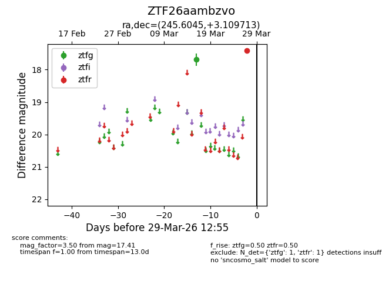
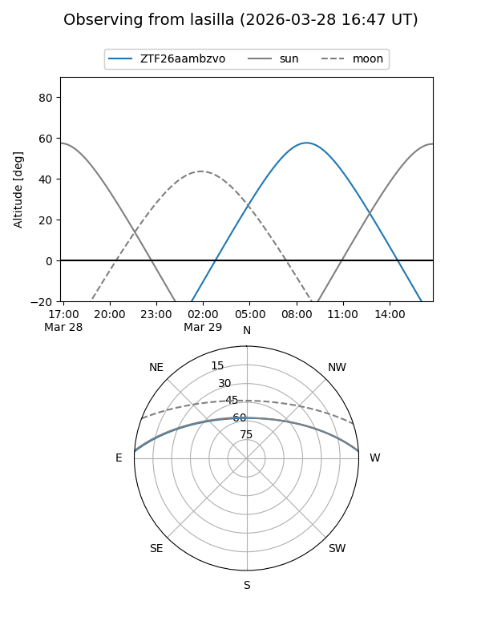
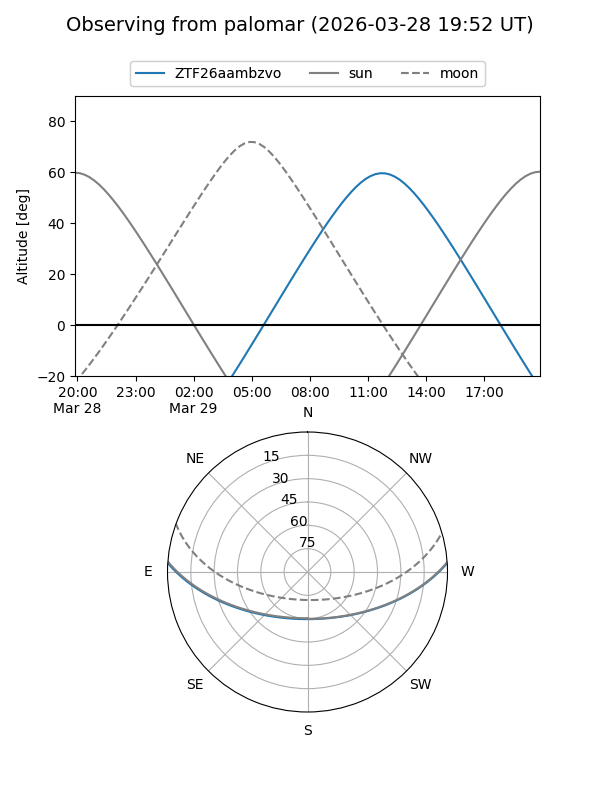

ZTF26aambzvo
Target ZTF26aambzvo at 2026-03-29 12:58
Aliases and brokers:
FINK: link
Lasair: link
ALeRCE: link
alt names
ZTF26aambzvo (ztf,fink_ztf)
Coordinates:
equatorial (ra, dec) = 245.6045,+3.10971
equatorial (HMS+DMS) = 16:22:25.08,+03:06:34.97
galactic (l, b) = (16.9685,+34.24335)
Flags:
Photometry:
last ztfg=17.69, ztfr=17.41
1 ztfg, 1 ztfr detections
Lightcurve

Visibility


Additional plots